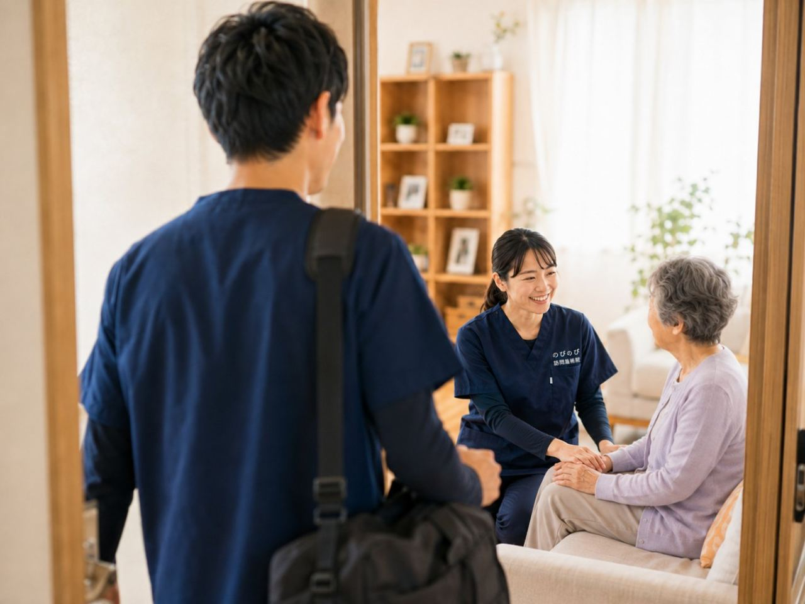

肘の外側や内側が痛む、物を持ち上げると肘に響く、肘が伸ばしにくい。上腕骨外側上顆炎（いわゆるテニス肘）をはじめ、使いすぎや加齢による腱や関節の変化で起こることがあります。診断や治療方針は整形外科などの医師が判断しますが、痛みをかばって固くなった前腕や肩まわりのこわばりを和らげる部分は、ご自宅にうかがう鍼灸・マッサージでお手伝いできます。
この記事のポイント
診断や治療方針は整形外科などの医師が判断します。ただ、痛みをかばって固くなった前腕や肩まわりの筋肉のこわばりを和らげ、めぐりをうながすことは、訪問鍼灸マッサージがお手伝いできます。長引く痛みについて医師が鍼やお灸を必要と認め、通院がむずかしい状態なら、はり・きゅうの医療保険の対象になる場合があります。転んだあとの強い痛みや腫れ、肘が曲げ伸ばしできないときは、まず整形外科を受診してください。
肘の痛みには、いくつかの原因がある
肘の痛みと一口にいっても、原因はさまざまです。肘の外側が痛むテニス肘（上腕骨外側上顆炎）は、手首や指を使う動作の繰り返しで、腱の付け根に負担がかかって起こります。内側が痛むタイプ、関節の変形によるもの、ぶつけたり転んだりしたあとの痛みなど、原因によって対応も変わります。ご高齢の方では、日々の家事や介護、杖の使用などで肘に負担が積み重なっていることもよくあります。
診断と治療方針は医師が決める
肘の痛みがどこから来ているのかは、整形外科などの医師が診察や検査をもとに判断します。安静やお薬、装具、注射など、原因に応じた治療が行われます。骨や関節そのものに問題がある場合もあるため、まずは受診してご自身の状態を知っておくことが肝心です。訪問鍼灸マッサージは、その治療と並行して、痛みをかばって固くなった筋肉を和らげるお手伝いをします。
すぐに医療機関へ相談したほうがよいとき
転んだり強くぶつけたりしたあとに強い痛みや腫れがある、肘が曲げ伸ばしできない、手や指がしびれて力が入らない、熱を持って赤く腫れているといった場合は、骨折や神経・関節のトラブルが隠れていることがあります。早めに整形外科を受診してください。じっとしていても激しく痛む、痛みがどんどん強くなるといったときも、自己判断せず医療機関に相談することが欠かせません。
痛みをかばう緊張が、つらさを長引かせる
肘が痛むと、無意識にその腕をかばい、前腕や肩、首まわりの筋肉まで固く緊張してしまいます。めぐりが滞ると、それがまた痛みやだるさを呼び、動かすのがおっくうになって、さらに肩や腕全体が動かしにくくなる、ということが起こりがちです。肘だけでなく、腕全体・肩まわりのこわばりをほぐしていくことが、つらさを和らげる助けになります。
介護や家事で肘に負担がかかっている方へ
ご高齢のご家族を介護している方や、日々の家事を続けている方では、体を支えたり物を持ち上げたりする動作の繰り返しで、知らず知らずのうちに肘へ負担が積み重なっていることがあります。杖や手すりを使う方も、腕や肘に体重をかける場面が多く、痛みが出やすくなります。痛みを我慢して同じ動作を続けると、こわばりが強まり回復も遅れがちです。無理のない体の使い方を一緒に見直しながら、負担の減らし方を考えていくことも、在宅ケアの役割の一つです。
鍼灸でできるのは、こわばりを和らげること
訪問鍼灸マッサージがお手伝いできるのは、痛みの原因そのものを取り除くことではなく、痛みをかばって縮こまった前腕や上腕、肩まわりの筋肉をゆるめ、めぐりを助けることです。はりやお灸でこわばりが和らぐと、腕に力を入れやすくなった、物を持つときの痛みが気になりにくくなったと話される方もいます。感じ方には個人差があります。鍼灸に加えて、肘・肩をゆっくり動かす機能訓練も行い、その日の痛みの程度に応じて刺激を細かく加減します。
ご家庭で、力になれること
痛みが強い時期は、肘に負担のかかる動作を控え、無理に動かさないことが大事になります。落ち着いてきたら、前腕や肩を温めてめぐりを助けたり、その日の体に合わせてゆっくり動かしたりすることが、こわばりの予防につながります。物を持つときは手首だけに頼らず、体全体で支えるようにすると、肘への負担を減らせます。どの程度動かしてよいかは、医師の指示を土台に、施術のなかでも一緒に確認していきます。
うかがっていて聞くこと
痛みが和らいで動かしやすくなったと話される方がいます。腕や肩をほぐしたあと、体が軽く感じられたとおっしゃる方もいます。一方で、変わらないという方もいて、感じ方には個人差があります。痛みの原因そのものが変わるわけではありませんが、日々の家事や暮らしのしやすさを支えることにつながればと思っています。
気になる費用のこと
肘の慢性的な痛みについて、医師が鍼やお灸を必要と認め、通院がむずかしい状態であれば、はり・きゅうの医療保険が使える場合があります。1回の総額は3,950円で、自己負担は負担割合に応じた分だけです。1割の方でおよそ395円が目安です。対応エリア内であれば出張費は別にかからず、集金は月ごとにまとめて行います。その月の明細をお渡ししますので、いつ何回うかがい、いくらかかったかがあとから確かめられます。負担割合ごとの金額とひと月の目安は、料金のページで計算しています。
ご利用までの流れ
はじめに、お電話などでご相談ください。痛みの出方や日常でつらい動作、通院の様子、かかりつけの医療機関をうかがい、医師の診断を土台に、肘や腕まわりへ鍼灸でお手伝いできることをご説明します。痛みの強い時期は刺激を控えめにして始めます。同意書など保険の手続きも、こちらでお手伝いしますのでご安心ください。
よくある質問
テニス肘は鍼灸で治りますか？
痛みの原因そのものを鍼灸で取り除くわけではありません。鍼灸は、痛みをかばって固くなった筋肉のこわばりを和らげ、動かしやすさを支える役割です。治療方針は医師にご相談ください。
肘の痛みでも保険で受けられますか？
医師が鍼やお灸を必要と認め、通院がむずかしい状態であれば、慢性的な肘の痛みは対象になる場合があります。まずは整形外科などで診てもらいましょう。
痛みが強い時期でも受けられますか？
痛みの強い時期は刺激を弱め、負担にならない範囲で行います。受けてよいか不安なときは、事前にご相談ください。
肘以外の場所もみてもらえますか？
肘をかばって固くなりやすい前腕・肩・首まわりも含めて、体全体のバランスを見ながら施術します。
費用は1回いくらですか？
1回の総額は3,950円で、自己負担は負担割合に応じた分だけです。1割の方でおよそ395円が目安になります。対応エリア内であれば出張費は別にかかりません。
どのあたりまで来てもらえますか？
豊中・吹田・茨木・箕面・摂津・池田、尼崎・伊丹、大阪市の淀川区・東淀川区・都島区・北区・旭区にうかがっています。